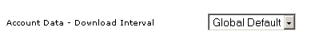
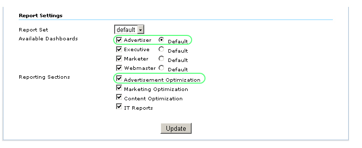
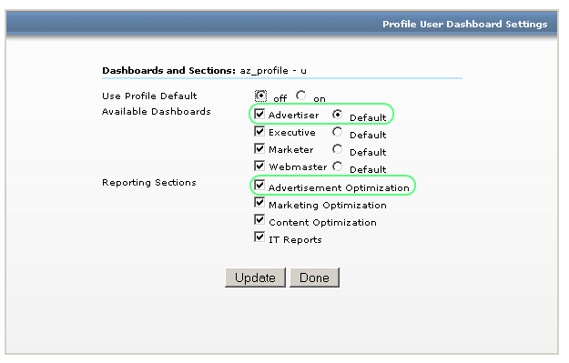
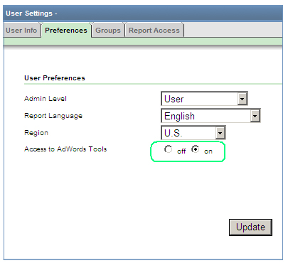
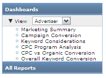
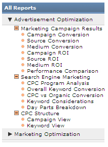
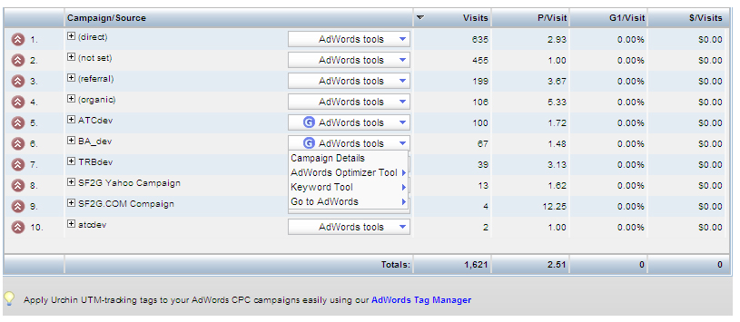
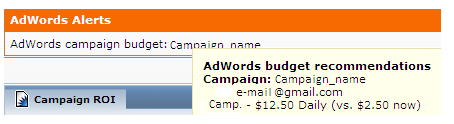

Urchin と AdWords との統合
Urchin 6.6 は、キーワード ツール、AdWords Editor、キャンペーンの 1 日の予算の推奨などいくつかの AdWords の機能と統合されています。
これらのツールを使用するには、まず最初に、AdWords の CPC データとアカウント データをダウンロードする必要があります。 AdWords の CPC データは、CPC ソース設定ダイアログや CPC スケジューラで手動でダウンロードできます。

AdWords アカウント データには、AdWords の現在のアカウント構造が反映されています。このデータは、特定の CPC ソースの "アカウント データ - ダウンロードの間隔" パラメータや、グローバルな CPC ソースの更新設定に従って自動的にダウンロードされます。 AdWords アカウントのデータをただちにダウンロードする場合は、"アカウント データ - ダウンロードの間隔" を 5 分に設定します。

"広告主向け" の表示と "広告の最適化" セクションが新しく導入され、AdWords の関連機能と合わせてお使いいただけるようになりました。 "広告主向け" の表示と "広告の最適化" セクションは、プロファイルのレポート設定でオン/オフを切り替えることができます。

Urchin 6.6 では、ユーザーやグループごとに "広告主向け" の表示と "広告の最適化" セクションを有効にしたり無効にすることもできます。 その場合は [プロファイル設定] の [ユーザー] にアクセスしてください。 [アクセス許可] では、ユーザーを選択して [ダッシュボードを上書き] をクリックし、 新しく開いたウィンドウで [プロファイルのデフォルトを使用] をオフにします。 必要に応じてダッシュボードやレポート セクションをオンまたはオフにして、[更新] をクリックします。

[ユーザー設定] の [基本設定] で、ユーザーの AdWords ツールへのアクセスを許可したり、許可を取り消すことができます。

"広告主向け" の表示では、マーケティングの概要ダッシュボードと 5 つの基本的なレポートが表示され、これらは AdWords のツールとリンクで拡張されています。

"広告の最適化" レポート セクションは 3 つのレポート グループ（マーケティング キャンペーンの結果、検索エンジン マーケティング、CPC 構成）で構成され、次のレポートが含まれています。

キーワード ツール、タグ マネージャ、AdWords Editor への AES ファイルのエクスポートなど、さまざまな新しい AdWords 関連機能は "広告の最適化" セクション レポートにあります。
 
予算のアラート
予算のアラートは、AdWords で提供される 1 日の予算の推奨額に基づいて表示されます。 アラートが表示されるということは、AdWords キャンペーンの 1 日の予算を改善できることを意味します。 予算を推奨額に引き上げると、広告を最大限に表示して 1 か月あたりのクリック数を増やすことができます。
推奨額を確認するには、AdWords アラート エリアでキャンペーン名の上にマウスのカーソルを置くと、 選択したキャンペーンに関する情報が、次のようにテキスト ボックスに表示されます。 
AdWords の予算のアラートに関する情報を更新するには、[今すぐスケジュールを更新] リンクをクリックします。

予算のアラートは、[広告主向けの表示] と [広告の最適化] セクションの、[マーケティングの概要]、[キャンペーンのコンバージョン]、[キャンペーンの投資収益率] のレポートに表示されます。